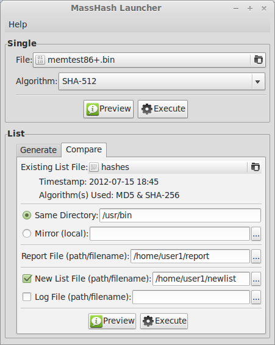
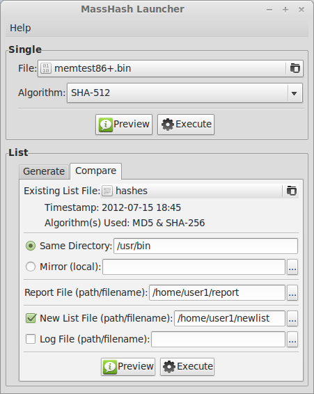

MassHash
A set of file hashing tools
About
MassHash is a set of file hashing tools for the command-line. A GTK+ GUI called MassHash Launcher
is also available for executing MassHash commands. Both are open source, written in Python, and released under the GNU GPLv3 license.
Features :
- Supported algorithms include: MD5, SHA-1, SHA-224, SHA-256, SHA-384, SHA-512
- Generate a hash for a single file
- Generate a list (plain text file) of hashes for all files in a directory (and subdirectories)
- Compare a previously generated list of hashes against the same directory (or mirror)
Screenshots
MassHash Launcher running on GNU/Linux:
 

Downloads
Source code
Current Release: 1.0.1
tar.gz :
MD5 - c1dcf72a7316b230c495d2c70b8a4860
SHA-256 - f856d82eb2486c5616020fa19cb8f33148b8eed129f2d4fd68d5cc11fbdc5233
zip :
MD5 - 3ec1b27cb7551e2aac81bf09c25befc2
SHA-256 - f18f85ac824fac8b6465dbe3f51dd79d6c4f38d00982cb88938d7d7da4386549
Note: A file called "hashsums" is contained within each download. The hashsums for this file are:
MD5 - e5a4006a134a06ce0973f780849b0594
SHA-256 - 8716a1c0f45836630ea0a4c98988fa2774cf8f7e474a8f82c2c15d4b8fe91f6a
Repositories
Arch Linux AUR: Package...
Support
This project is hosted from GitHub, and maintained by jdleicher.
Check out the project page for:
- information on dependencies, installation, usage, etc.
- code review
- bugs/issues